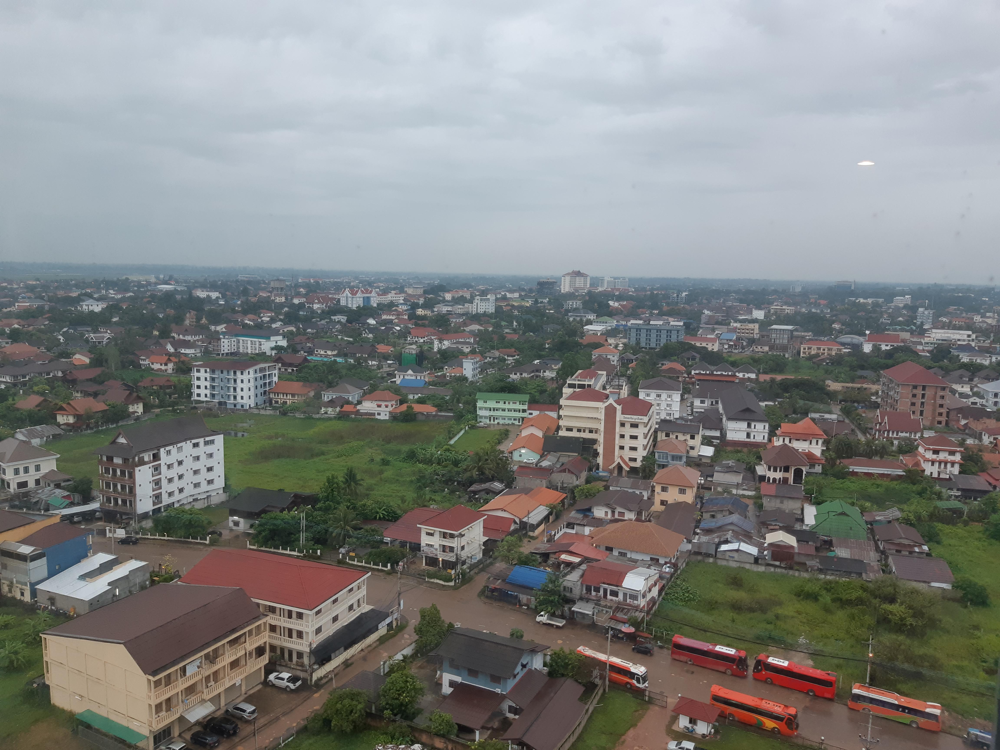

2018년 가족과 함께 비엔티엥,방비엥,루앙프라방을 방문하였다.
요즈음 비엔티안 시내 중심가에 한국인 관광객을 심심찮게 본다.방학이면 해외 봉사 명목으로 대학생이 크게 늘어나고 건기에는 단체 관광객이 주를 이룬다. 가끔 혼자나 둘이서 단출히 라오스를 찾아오는 사람들도 있다. 어떤 이유에서건 많은 사람들이 라오스를 찾는다.
아마도 ‘꽃보다 청춘’ 방송 이후 더 많은 사람이 라오스를 찾는지도 모르겠다. 페루는 너무 멀어 큰 결심이 필요하지만 사실 라오스는 그냥 마음먹고 출발하면 된다. 그만큼 가깝다. 5시간 정도면 온다. 아래는 라오스 여행에 대한 소회다. 그리고 여행을 준비하는 사람들을 위한 조언이기도 하다.
